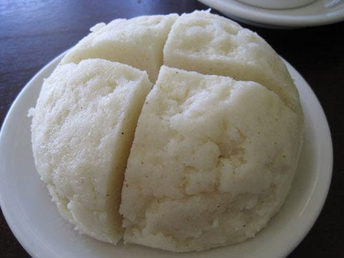

Home
Githeri

Description
Githeri is a boiled mixture of beans and maize.
Ingredients
3 litres Water
1
/
4
kg Maize
1
/
4
kg beans
Instructions
Wash the maize and boil it till it softens
Wash the beans and add them to the maize
Continue boiling till the beans also sotften
Stirr well then serve.